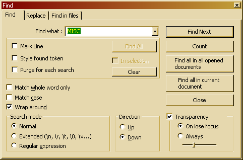

You can search text as in most programs using the Find/Replace dialog. You can open this dialog by selecting (or pressing ), (or pressing ) or .
Each of these options will open the corresponding tab in the Find/Replace dialog. This dialog will always stay on top of the text, but you can still keep on editing the text if it's opened, and you can set it to be transparent (using the Transparency option) when its inactive (On lose focus) or at all times (Always). The slider controls the amount of transparency. Note that transparency is only available on Windows 2000 and later.
In the Find what field, type the text you want to find. This is automatically filled with the current selected text, or the word under the caret, or the last searched pattern, when the Find dialog is opened. The drop down list contains previous search items if a search was performed before. See also Search Mode.
The section below the Find what field allows you to mark and indicate all hits for a certain search.
To perform any of these actions, click the button in the section. To clear all the results, click the button.
The In selection checkbox will restrict search to the selection. It is disabled if there is no selection.
The search mode determines how the query will be handled:
The search direction determines to what relative direction of the cursor will be searched. Up means text before the cursor will be searched, Down means text beyond the cursor will be searched.
To find the (next) hit, press (or Enter). will count the amount of hits the search will result in. will search all opened documents and displays a list of results for each file, see also Searching in Files. behaves in a very similar way.
simple closes the search dialog (close button and ESC do the same).